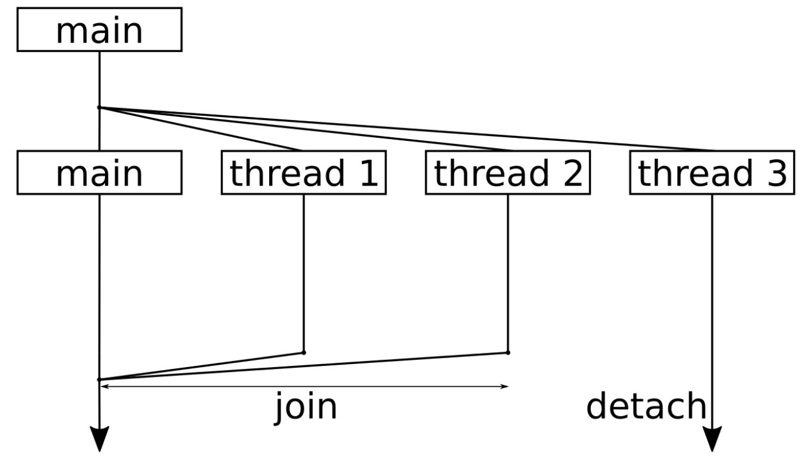

目录
1. 创建线程对象
多并发编程
- 多进程：通信部分：文件、管道、消息队列
- 多线程：共享内存：不能在分布式系统下运行
函数对象 或 类对象 能构造线程
值传递：默认是值传递，但是过程中会产生大量的复制，可以考虑移动赋值。
- 直接复制
- 移动：
std::move()
引用传递：
std::ref()
// 函数对象
type function(type param);
/* 值传递：复制 */ thread th1(function, param);
/* 值传递：移动 */ thread th1(function, std::move(param));
type function(type& param)
/* 引用传递 */ thread th1(function, std::ref(param));
// 类对象
class className {
className(type param):(){};
};
/* 值传递 和 引用传递 与函数写法一致 */
/* 类对象还能直接通过类对象构造，如下 */
thread th2( (className()), param); // --> 但必须重载()操作符- 线程对象只能移动，不能复制
获得线程对象 ID
- 当前线程 ID，可用于主线程或者子线程对象：
std::this_thread::get_id() - 只能用于线程对象 ID：
th.getid()
- 当前线程 ID，可用于主线程或者子线程对象：
获取当前系统能够同时运行的线程个数：
std::thread::hardware_concurrency()
// 类对象和lambda构造线程
#include <iostream>
#include <string>
#include <thread>
class Fctor {
public:
void operator()(std::string msg) {
std::cout << "original : " << msg << std::endl;
msg = "222222";
std::cout << "modify : " << msg << std::endl;
std::cout << "Class thread id: " << std::this_thread::get_id() << std::endl;
}
};
int main() {
std::string s{"111111"};
// std::thread th1((Fctor()), std::ref(s));
std::thread th1((Fctor()), std::move(s));
std::cout << "th1 thread id: " << th1.get_id() << std::endl;
std::cout << "main thread id: " << std::this_thread::get_id() << std::endl;
th1.join();
std::cout << "max_thread_num: " << std::thread::hardware_concurrency() << std::endl;
std::thread th2([]() { std::cout << "hello world." << std::endl; });
th2.join();
return 0;
}th1 thread id: 140507420055296
main thread id: 140507420059456
original : 111111
modify : 222222
Class thread id: 140507420055296
max_thread_num: 8
hello world.2. 使用可调用对象：线程的几种调用方式
2 种创建子进程方式：
std::thread t1(a, 6);std::async(std::launch::async, a, 6)
8 种方式创建子线程对象 --> 都适用于 2 种创建子进程的方式：
a的拷贝a的引用a的移动：A.aA()临时类对象- 全局函数
lambda函数a的拷贝的成员函数 --> TODO:a的地址的成员函数 --> TODO:
// 2种创建子线程的方式
// 8种创建子线程的方式
#include <fstream>
#include <future>
#include <iostream>
#include <mutex>
#include <string>
#include <thread>
class A {
public:
void f(int, char) {
}
int operator()(int) {
return 0;
}
};
void foo(int) {
}
int main() {
A a;
// 2种创建线程的方式
// std::thread(a, 6);
// std::async(std::launch::async, a, 6);
// 8种创建子线程的方式
std::thread t1(a, 6); // 传递a的拷贝给子线程
std::thread t2(std::ref(a), 6); // 传递a的引用给子线程
std::thread t3(std::move(a), 6); // 移动a到子线程，a在主线程中不再有效
std::thread t4(A(), 6); // 传递临时创建的a对象给子线程
std::thread t5(foo, 6); // 传递全局函数对象
std::thread t6([](int x) { return x * x; }, 6); // 传递 lambda 函数
// TODO: 这2种不是很懂
std::thread t7(&A::f, a, 8, 'w'); // 传递a的拷贝的成员函数给子线程
std::thread t8(&A::f, &a, 8, 'w'); // 传递a的地址的成员函数给子线程
t1.join();
t2.join();
t3.join();
t4.join();
t5.join();
t6.join();
t7.join();
t8.join();
return 0;
}3. 启动和停止 thread
单核 CPU 可以有很多线程并行，但是不可能是并发，并发是真正的同步运行。以下几点是我们绝对无法控制的：
- 共享一个 CPU 核时，无法控制线程交替运行的顺序
- 线程也是有优先级的，优先级会影响线程执行的顺序
- 实际上线程是分布在所有 CPU 核上的，当然操作系统也可以将线程绑定在一个核上。这也就意味着所有的线程可以运行在单核上，也可以运行在具有 100 个 CPU 核的机器上

这幅图的顺序是自顶向下，你会看到我们将整个程序分成了 4 个线程。一开始，启动了额外 3 个线程来完成一些事情，之后主线程仅等待其他线程的结束。
线程结束对函数的执行后，会从函数中返回。标准库会进行相关的操作，将线程从操作系统的中删除，或用其他方式销毁，所以这里就不用操心了。
detach()意味着即使主线程停止了，该线程也可以继续运行。一个线程被detach后就不能再join了，可先判断joinable()- 当对线程对象调用函数
x.join()时，其会让调用线程休眠，直至x线程返回
// 9_3_threads.cpp
#include <chrono>
#include <iostream>
#include <thread>
using namespace std;
using namespace chrono_literals;
// 使用线程 ID 来控制线程休眠的时间，避免多个线程在同时执行 cout
static void thread_with_param(int i) {
this_thread::sleep_for(1ms * i);
cout << "Hello from thread " << i << '\n';
this_thread::sleep_for(1s * i);
cout << "Bye from thread " << i << '\n';
}
int main() {
// 当前系统所能使用的线程数
cout << thread::hardware_concurrency() << " concurrent threads are supported.\n";
thread t1{thread_with_param, 1};
thread t2{thread_with_param, 2};
thread t3{thread_with_param, 3};
// 使用 join 函数来停止线程
// 调用 join 将会阻塞调用线程，直至对应的线程终止为止
t1.join();
t2.join();
// 分离
t3.detach();
// 运行时，main 结束后 t3 线程还在休眠，所以 t3 是没有数据输出的
cout << "Threads joined.\n";
return 0;
}8 concurrent threads are supported.
Hello from thread 1
Hello from thread 2
Hello from thread 3
Bye from thread 1
Bye from thread 2
Threads joined.4. std::async（坑）
将执行的程序推到后台。
std::async函数能够接收一个策略和一个函数，以及函数对应的参数，可以并发进行多个不同事情，不显式创建线程。std::async不一定会产生子进程，这取决于async的第一个参数：
| 策略选择 | 意义 |
|---|---|
| `launch::async` | 创建一个新的线程，以异步执行任务 |
| `launch::deferred` | 不会创建子进程，会在同一个线程中延期启动任务。在对 `future` 调用 `get` 和 `wait` 的时候，才进行执行。如果什么都没有发生，那么执行函数就没有运行 |
| `launch::async | launch::deferred` | 当没有提供策略时，这是**默认**的选择。具有两种策略共同的特性，STL 的 `async` 实现可以的选择策略 |
【注意】get() 可获得返回值，只能被调用一次，使用 std::future<T>::get ，会阻塞主函数，直到相应的值返回。
std::future<int> ft = std::async(factorial, 4);
x = ft.get();【注意】需要注意 std::async 的使用周期问题：运行这段代码时，程序会阻塞在这两个调用上，这并不是我们想看到的情况。虽然 async 是非阻塞式、异步的调用，但当对一个 async 使用 launch::async 策略时，获取一个 future 对象，之后其析构函数将会以阻塞式等待方式运行。这也就意味着，这两次调用阻塞的原因就是：future 生命周期只有一行的时间，所以我们可以通过获取其返回值的方式，来避免这个问题，从而让 future 对象的生命周期更长。
async(launch::async, f);
async(launch::async, g);【实例】从子线程中获取返回值到主线程中。
不涉及到创建线程对象，但通过在 main 函数和 factorial 函数中的 this_thread::getid() 获得到的线程 ID 缺失不一样的。
#include <iostream>
#include <string>
#include <thread>
#include <fstream>
#include <future>
// 需要修改为有返回值
int factorial(int N) {
int res = 1;
for (int i = N; i > 1; i--)
res *= i;
std::cout << "Result is: " << res << std::endl;
std::cout << "factorial id: " << std::this_thread::get_id() << std::endl;
return res;
}
// 将主线程中的产生的数据传入到副线程中
// 首先想到的是新建变量，再传入到线程对象中，但是仅仅这做是不够的，因为x是在主线程和副线程中共享的
// 所有需要添加个互斥量，另外还需要保证主线程先把x计算出来，再传递到子线程中，所以还需要个条件变量
// 这样一来程序就变得复杂起来了
// -> 这里就不再需要子线程了，通过 std::async() 返回一个 future 给他
int main() {
int x;
// std::thread t1(factorial, 4, std::ref(x));
// t1.join();
std::future<int> ft = std::async(factorial, 4); // 此处会产生子线程
// 第一个参数是std::launch::deferred，则表示会在同一个线程中等到调用get()才会启动factorial函数
// 如果第一个参数是 std::launch::async，则会创建一个新线程来执行
//std::future<int> ft = std::async(std::launch::deferred, factorial, 4);
x = ft.get(); // 可获得返回值，但只能被调用一次
std::cout << "x: " << x << std::endl;
std::cout << "main id: " << std::this_thread::get_id() << std::endl;
return 0;
}
/* 输出结果：
Result is: 24
factorial id: 140336783935232
x: 24
main id: 140336802191168
*/【示例】
// 9_8_async.cpp
#include <iostream>
#include <iomanip>
#include <map>
#include <string>
#include <algorithm>
#include <iterator>
#include <future>
// 将执行的程序推到后台——std::async
using namespace std;
// 对字符串中的字符进行统计
static map<char, size_t> histogram(const string &s) {
map<char, size_t> m;
for (char c : s) { m[c] += 1; }
return m;
}
// 返回排序后的版本
static string sorted(string s)
{
sort(begin(s), end(s));
return s;
}
// 对字符串中的元音字符进行计数
static bool is_vowel(char c)
{
char vowels[] {"aeiou"};
return end(vowels) != find(begin(vowels), end(vowels), c);
}
static size_t vowels(const string &s)
{
return count_if(begin(s), end(s), is_vowel);
}
int main()
{
cin.unsetf(ios::skipws); // 禁止对输入字符串进行分段
string input {istream_iterator<char>{cin}, {}};
input.pop_back(); // 从字符串中删除最后一个字符
auto hist (async(launch::async, histogram, input));
auto sorted_str (async(launch::async, sorted, input));
auto vowel_count (async(launch::async, vowels, input));
for(const auto &[c, count] : hist.get()) {
cout << c << ": " << count << '\n';
}
cout << "Sorted string: " << quoted(sorted_str.get()) << '\n';
cout << "Total vowels: " << vowel_count.get() << '\n';
}
/*
$ echo "foo bar baz foobazinga" | ./async
: 3
a: 4
b: 3
f: 2
g: 1
i: 1
n: 1
o: 4
r: 1
z: 2
Sorted string: " aaaabbbffginoooorzz"
Total vowels: 9
*/